Armor study
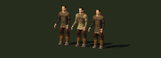
A: field-tunic · B: work-vest · C: travel-coat
Working choice: field-tunic
Inspect and rotateActual exported models in the application. Three alternatives per family at 30 samples/metre. This is an inspection sheet, not the final composed-scene review.

A: field-tunic · B: work-vest · C: travel-coat
Working choice: field-tunic
Inspect and rotate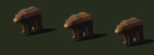
A: forest-brown · B: heavy-shoulder · C: pale-muzzle
Working choice: forest-brown
Inspect and rotate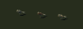
A: grey-wing · B: warm-bib · C: wing-bars
Working choice: grey-wing
Inspect and rotate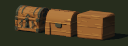
A: carved-lid · B: banded-lid · C: plank-cache
Working choice: banded-lid
Inspect and rotate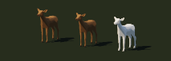
A: woodland-doe · B: slender-doe · C: dark-back
Working choice: woodland-doe
Inspect and rotate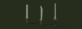
A: straight-crossguard · B: broad-tip · C: long-grip
Working choice: broad-tip
Inspect and rotateA: round-boards · B: reinforced-round · C: heater
Working choice: round-boards
Inspect and rotateA: utility · B: leaf-point · C: long-knife
Working choice: utility
Inspect and rotateA: field-bow · B: curved-limbs · C: bound-grip
Working choice: field-bow
Inspect and rotate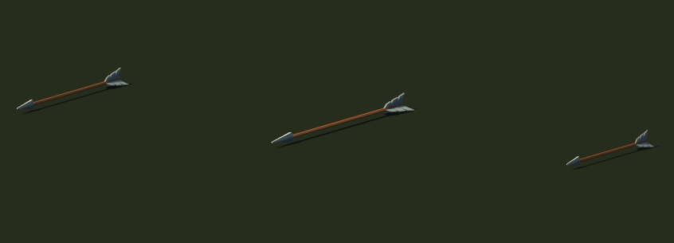
A: bone-point · B: broad-fletching · C: slender-shaft
Working choice: bone-point
Inspect and rotate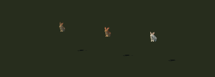
A: field · B: russet · C: winter
Working choice: field
Inspect and rotate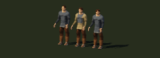
A: field-tunic · B: work-vest · C: travel-coat
Working choice: travel-coat
Inspect and rotate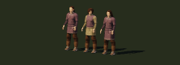
A: field-tunic · B: work-vest · C: travel-coat
Working choice: travel-coat
Inspect and rotate
A: restored · B: tailored · C: embroidered
Working choice: restored
Inspect and rotate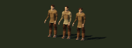
A: field-tunic · B: work-vest · C: travel-coat
Working choice: field-tunic
Inspect and rotate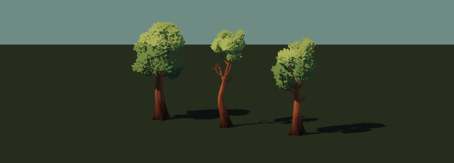
A: open-boughs · B: layered-crown · C: sheltered-crown
Working choice: sheltered-crown
Inspect and rotateA: field-tunic · B: work-vest · C: travel-coat
Working choice: field-tunic
Inspect and rotateA: field-tunic · B: work-vest · C: travel-coat
Working choice: field-tunic
Inspect and rotate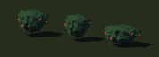
A: fruit-groups · B: open-canes · C: low-thicket
Working choice: fruit-groups
Inspect and rotate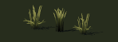
A: river-fan · B: broad-leaves · C: broken-stems
Working choice: river-fan
Inspect and rotate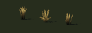
A: standing-stems · B: loose-stems · C: low-tuft
Working choice: standing-stems
Inspect and rotate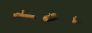
A: loose-branches · B: fallen-log · C: forked-stump
Working choice: loose-branches
Inspect and rotate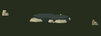
A: loose-stones · B: flat-stone · C: split-stone
Working choice: loose-stones
Inspect and rotate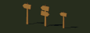
A: single-board · B: crossroads · C: worn-post
Working choice: single-board
Inspect and rotate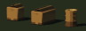
A: open-box · B: wide-box · C: stave-barrel
Working choice: open-box
Inspect and rotate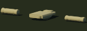
A: rolled-wool · B: open-bedroll · C: tied-bundle
Working choice: rolled-wool
Inspect and rotate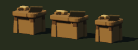
A: open-bench · B: long-table · C: narrow-bench
Working choice: open-bench
Inspect and rotate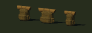
A: canvas-pack · B: broad-flap · C: slender-pack
Working choice: canvas-pack
Inspect and rotate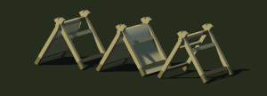
A: open-awning · B: canvas-tent · C: framed-tent
Working choice: open-awning
Inspect and rotateA: loose-coil · B: figure-eight · C: working-length
Working choice: loose-coil
Inspect and rotate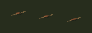
A: split-pouch · B: oval-pouch · C: long-pouch
Working choice: split-pouch
Inspect and rotate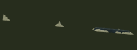
A: broad-flake · B: pointed-flake · C: small-scraper
Working choice: broad-flake
Inspect and rotate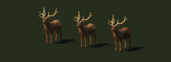
A: branching-antlers · B: slender-stag · C: dark-mantle
Working choice: branching-antlers
Inspect and rotate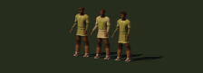
A: field-tunic · B: work-vest · C: travel-coat
Working choice: work-vest
Inspect and rotate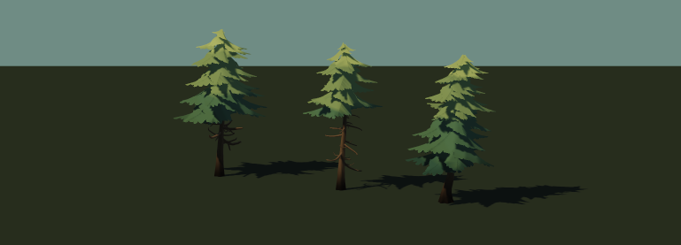
A: tiered-boughs · B: slender-crown · C: sheltered-pine
Working choice: sheltered-pine
Inspect and rotate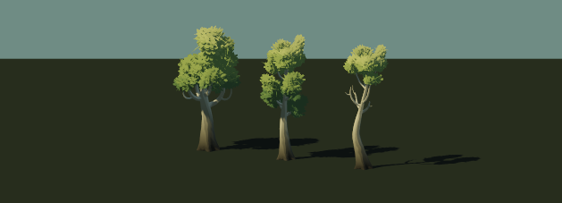
A: forked-trunk · B: slender-birch · C: open-branches
Working choice: slender-birch
Inspect and rotate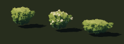
A: rounded-thicket · B: open-flowering · C: low-spreading
Working choice: rounded-thicket
Inspect and rotate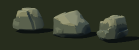
A: rounded-shoulder · B: split-planes · C: low-slab
Working choice: rounded-shoulder
Inspect and rotateA: broad-tuft · B: fine-tuft · C: open-stems
Working choice: broad-tuft
Inspect and rotate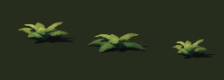
A: open-fronds · B: arching-fronds · C: sheltered-fronds
Working choice: open-fronds
Inspect and rotate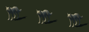
A: field-grey · B: full-ruff · C: dark-saddle
Working choice: field-grey
Inspect and rotate